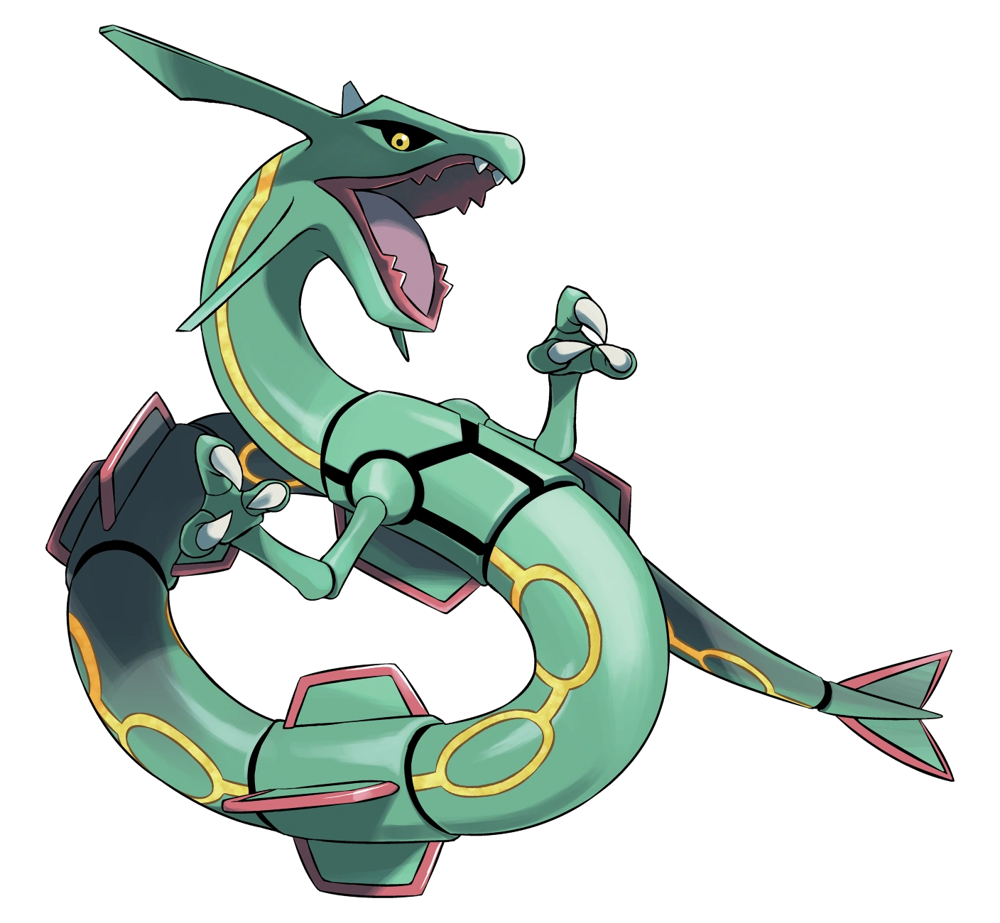

Mew es un Pokémon singular de tipo psíquico introducido en la primera generación. Es el ancestro de todos los
Pokémon, ya que tiene todos los genes de los Pokémon existentes. Además, es el único Pokémon capaz de
aprender todas las máquinas técnicas (MT), máquinas ocultas (MO) y movimientos del tutor de movimientos.

Rayquaza es un Pokémon legendario de tipo dragón/volador introducido en la tercera generación. Es la mascota
de Pokémon Esmeralda. Forma parte del trío creador junto con Groudon y Kyogre. A partir de Pokémon Rubí
Omega y Pokémon Zafiro Alfa puede megaevolucionar en Mega-Rayquaza.

Mewtwo es un Pokémon legendario y artificial de tipo psíquico introducido en la primera generación. Fue
creado por el doctor Fuji a partir del ADN de Mew. A partir de la sexta generación puede megaevolucionar en
Mega-Mewtwo X o en Mega-Mewtwo Y, convirtiéndose, junto con Mega-Rayquaza, en el Pokémon con la suma de
estadísticas de combate más altas.

Ninetales es un Pokémon de tipo fuego introducido en la primera generación. Es la evolución de Vulpix, la
contraparte de Arcanine y la forma habitual del Ninetales de Alola.
Lugia es un Pokémon legendario de tipo psíquico/volador introducido en la segunda generación. Conocido como
La deidad de los mares o El Misterio de las islas remolino, tiene su ubicación en las Islas Remolino. Es la
contraparte de Ho-Oh. Es la mascota de Pokémon Plata, Pokémon XD: Tempestad Oscura y Pokémon Plata
SoulSilver.
You can found more information in the next buttons